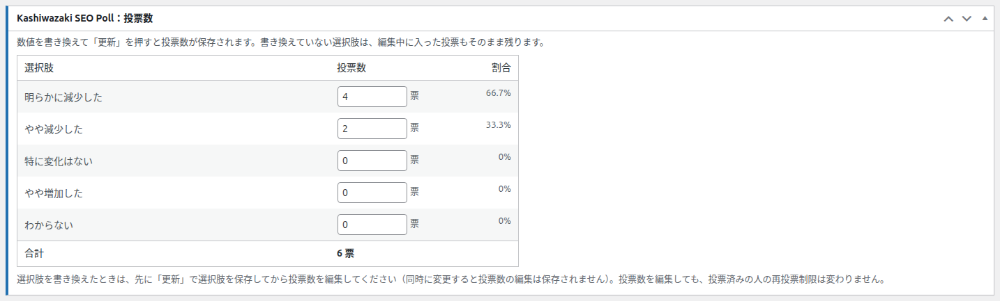
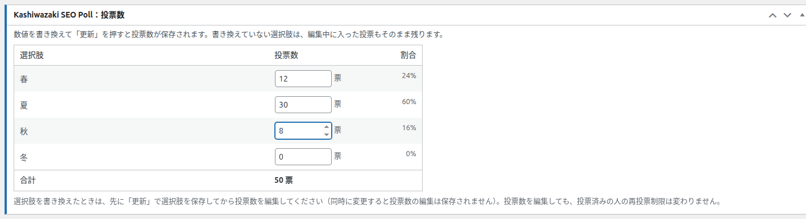
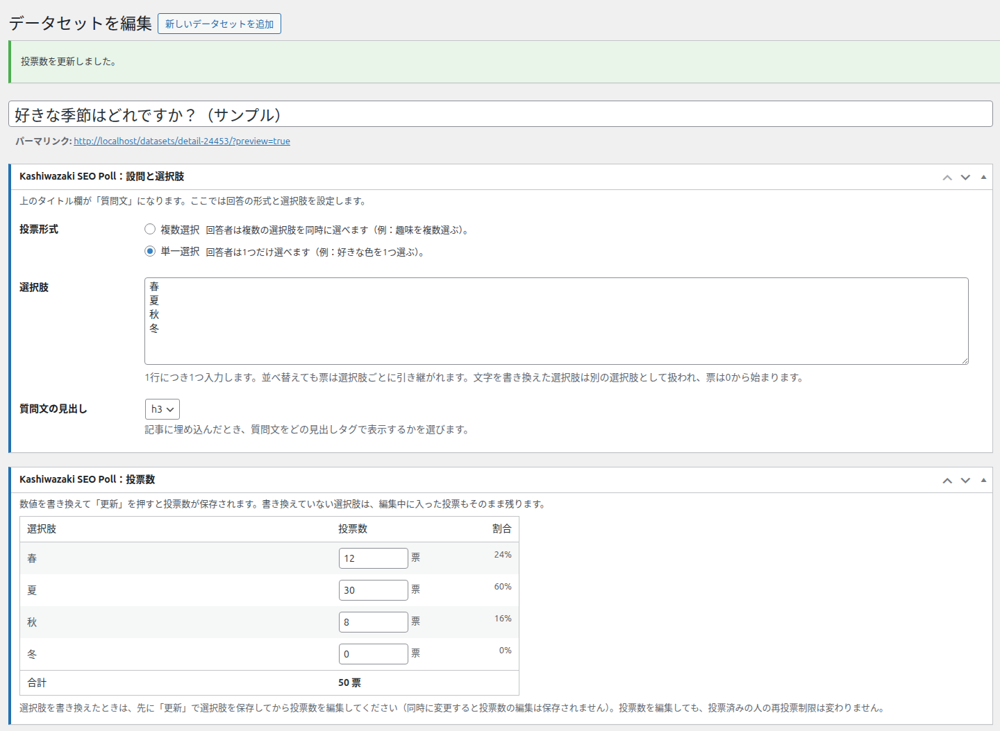
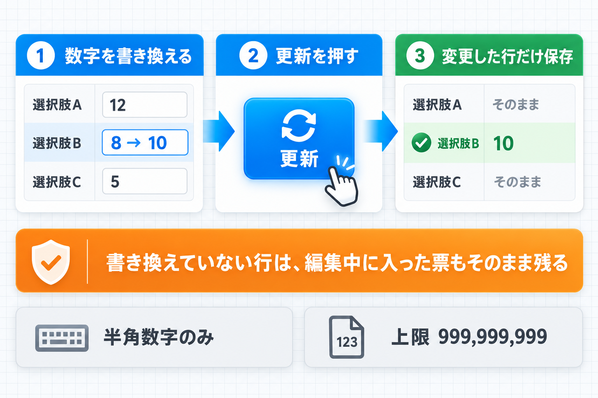
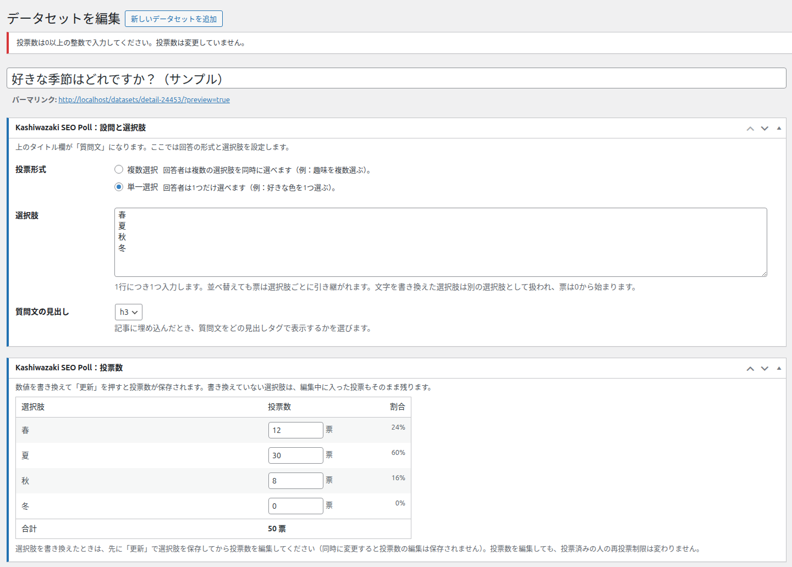
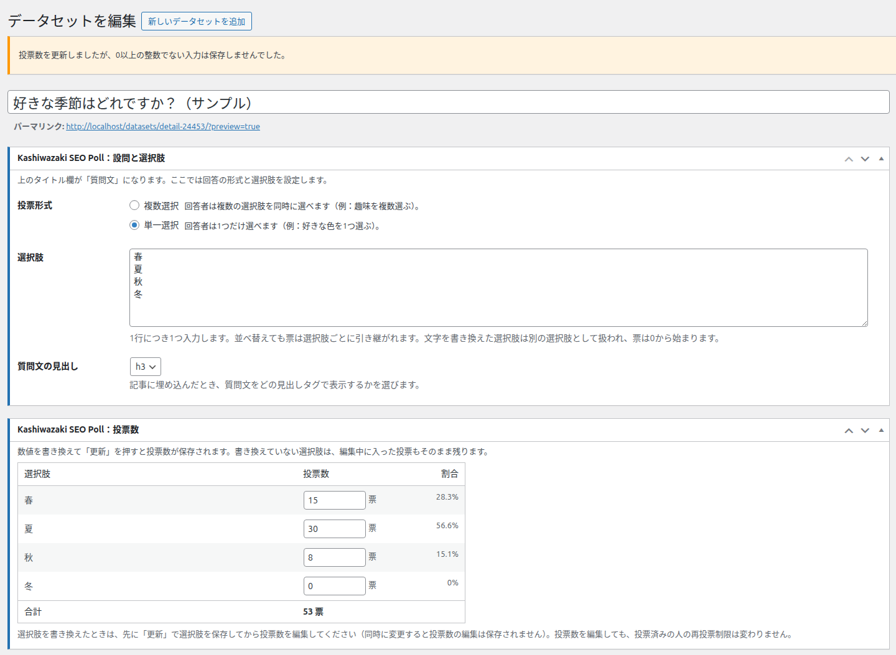
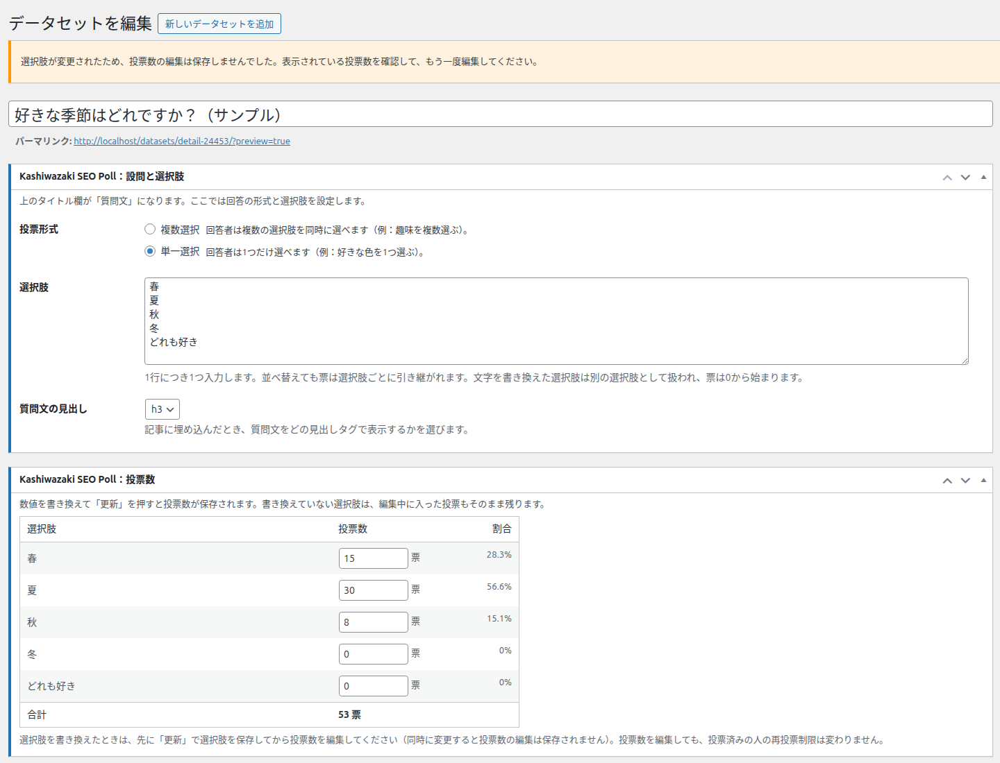

投票数の確認と編集
編集画面の「投票数」ボックスでは、選択肢ごとの投票数と割合を確認し、数字を直接書き換えて保存できます。紙のアンケートの結果を足したい、テストで入れた票を取り除きたい、といった場面で使います。

画面の地図
| 番号 | 領域 | 内容 |
|---|---|---|
| 1 | 冒頭の説明 | 「数値を書き換えて「更新」を押すと投票数が保存されます。書き換えていない選択肢は、編集中に入った投票もそのまま残ります。」 |
| 2 | 表 | 列「選択肢」「投票数」「割合」。選択肢ごとに1行 |
| 3 | 合計の行 | 全選択肢の合計（例: 6 票） |
| 4 | 下部の注意書き | 「選択肢を書き換えたときは、先に「更新」で選択肢を保存してから投票数を編集してください（同時に変更すると投票数の編集は保存されません）。投票数を編集しても、投票済みの人の再投票制限は変わりません。」 |
新規追加の直後
選択肢をまだ保存していないときは、表の代わりに「選択肢を入力して保存すると、ここで選択肢ごとの投票数を確認・編集できます。」と表示されます。
各項目
| 項目 | 内容 | 入力できる範囲 |
|---|---|---|
| 選択肢 | 「設問と選択肢」で保存した選択肢の名前 | 表示のみ |
| 投票数（右に「票」） | その選択肢の票数。書き換えて保存できます | 0〜999,999,999 の整数（半角数字） |
| 割合 | 合計に対する割合（小数第1位まで）。合計が0なら「—」 | 表示のみ。入力中もその場で計算し直します |
| 合計 | 全選択肢の合計票数 | 表示のみ。入力中もその場で計算し直します |

操作手順
直したい選択肢の「投票数」欄の数字を書き換えます。
割合と合計が意図どおりか確認します。
右上の「更新」（下書きなら「下書きとして保存」、未公開なら「公開」）を押します。
画面上部に「投票数を更新しました。」と出れば完了です。

保存されるもの・されないもの

- 書き換えた行だけが保存されます。画面を開いたときと同じ数字のままの行は「書き換えていない」とみなし、保存のときの最新の票数をそのまま残します。編集している間に来訪者が投票しても、その票は消えません。
- 書き換えた行は、入力した数字で上書きされます。編集中にその選択肢へ入った票は、入力した数字に置き換わります。
- 受け付けるのは 0〜999,999,999 の整数だけです。空欄・小数・マイナス・記号・全角数字は保存しません。
- 選択肢の変更と同時には保存しません。同じ保存で選択肢も変えた場合や、画面を開いた後に別の人（別のタブ）が選択肢を変えていた場合、投票数の書き換えはすべて保存しません。
- 保存すると「最終更新」の時刻が今になります。この時刻は「投票の受付と集計」ボックスの「最終更新」や、データセットページの「最終更新」「集計時点」に使われます。
- 公開中なら、データファイルとサイトマップも作り直します。CSV などのダウンロードにも新しい数字が反映されます。
取り消しはできません
保存した票数は元に戻せません。大きく書き換える前に、データセットページの CSV をダウンロードしておくと、元の数字を確認できます。
再投票の制限は変わりません
投票数を0に書き換えても、すでに投票した人が再び投票できるようにはなりません。投票した人の記録ごと消して最初からやり直したいときは、「集計データを全削除する」を使います（投票の受付と締め切り）。
この画面で出るメッセージ
| メッセージ | 種類 | 意味と対処 |
|---|---|---|
| 投票数を更新しました。 | 成功 | 書き換えた投票数をすべて保存しました。 |
| 投票数を更新しましたが、0以上の整数でない入力は保存しませんでした。 | 警告 | 正しい数字の行は保存しましたが、正しくない入力の行は保存していません。表の数字を確認し、必要なら入力し直してください。 |
| 投票数は0以上の整数で入力してください。投票数は変更していません。 | エラー | 書き換えた行がすべて正しくない入力でした。半角数字で入力し直してください。 |
| 選択肢が変更されたため、投票数の編集は保存しませんでした。表示されている投票数を確認して、もう一度編集してください。 | 警告 | 選択肢の変更と同時だったため、投票数は保存していません。選択肢の保存は済んでいるので、表示されている票数を見て、もう一度書き換えて保存してください。 |
| 設定を保存できませんでした。選択肢・投票数・データセット情報・受付の状態は変更していません（タイトルと本文は保存されています）。もう一度「更新」を押してください。 | エラー | データベースへの保存に失敗したため、元の状態に戻しました。もう一度保存してください。使えない文字が含まれていないかも確認してください。 |
| 他の処理（投票など）と重なったため、選択肢・投票数・データセット情報・受付の状態は保存しませんでした（タイトルと本文は保存されています）。少し待ってから、もう一度「更新」を押してください。 | エラー | 投票などが集中している間は、票の食い違いを防ぐため保存を見送ります。少し待ってから保存し直してください。 |
| 画面を開いた後に設定が変わったか、画面の読み込みに失敗したため、選択肢・投票数・データセット情報・受付の状態は保存しませんでした（タイトルと本文は保存されています）。ページを再読み込みして内容を確認してから、もう一度「更新」を押してください。 | エラー | 編集画面を開いている間に、別の画面（一覧からの受付の切り替えや、別の人の編集など）で設定が変わったか、画面を開いたときに設定を読み込めなかったため、古い内容や空の内容で上書きしないよう保存を見送りました。ページを再読み込みし、表示された内容を確認してから保存し直してください。 |



ブラウザのメッセージ
投票数の欄は数字専用の入力欄です。範囲外の数や小数を入れると、多くのブラウザでは保存する前に入力欄の横に注意が表示され、送信が止まります。その場合は上の表のメッセージは出ません。
よくある使い方
紙で集めた票を足したい
各選択肢の現在の票数に紙の票数を足した数を入力し、「更新」を押します。書き換えなかった選択肢は、その間に入った Web の票も含めて残ります。
選択肢の誤字を直したい（票を残したい）
直す前の票数をメモします。
「選択肢」の文字を直して「更新」を押します（直した選択肢は0票になります）。
「投票数」の表で、直した選択肢にメモした票数を入力し、もう一度「更新」を押します。
テスト投票を取り除きたい
テストで入れた分を引いた数を入力して保存します。投票した記録（再投票の制限）も消したいときは「集計データを全削除する」を使います。